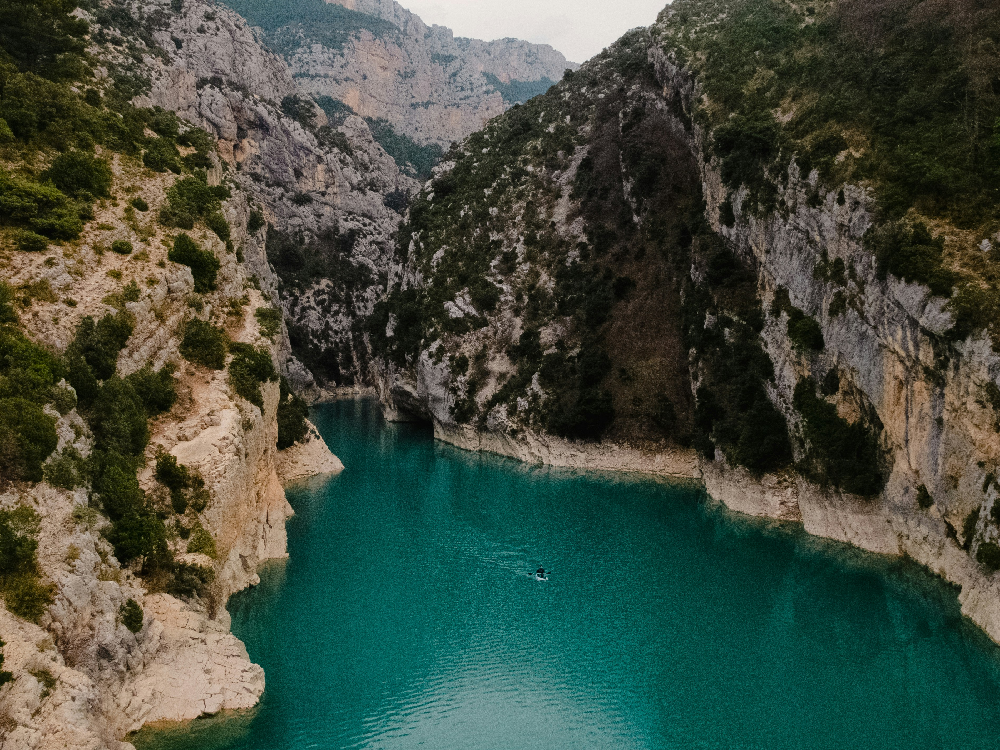
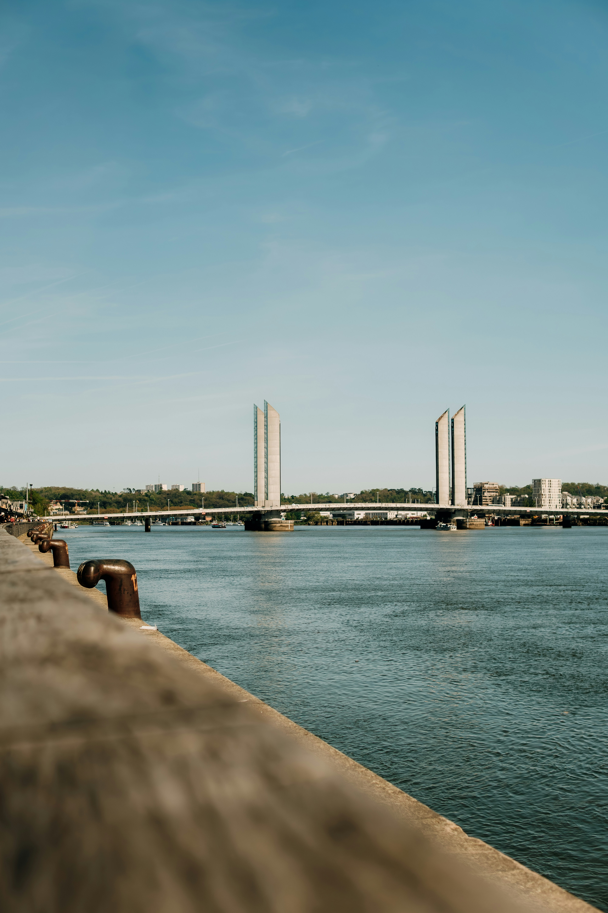
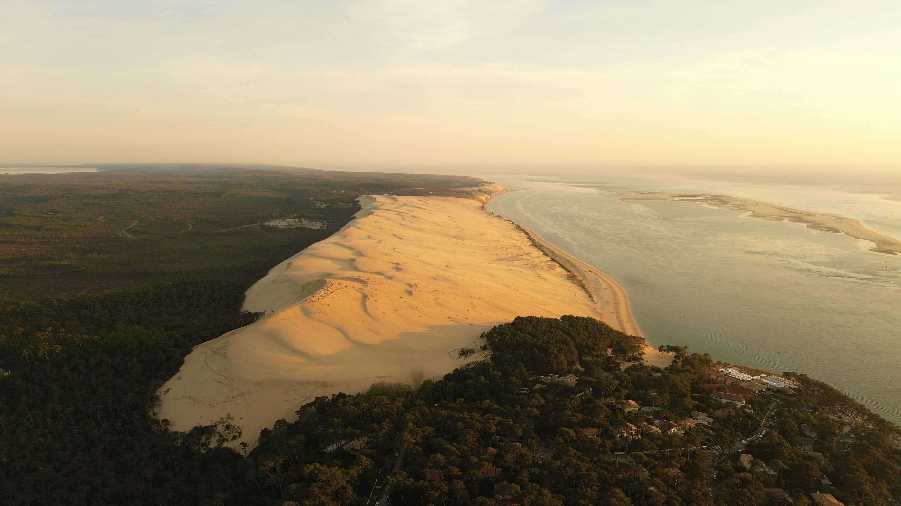
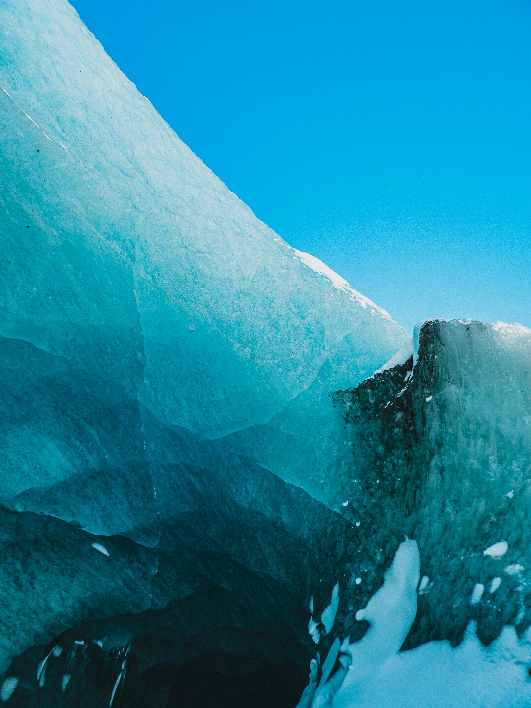

How rock and soil break down and move across the French landscape.
Covering the processes that shape the terrain from karst caves and Alpine landslides to shifting river sandbars, windswept plains, and retreating glaciers.
Weathering & Mass Wasting
France's geology is based mostly on old granite basement rock in the west and north, while in the center and south, it is dominated by thick limestone cover.
This geological diversity leads to a wide range of weathering and erosion processes across the country.
Chemical Weathering: Carbonation and Hydrolysis
There are two main types of chemical weathering in France: carbonation and hydrolysis.
Carbonation occurs when rainwater absorbs carbon dioxide to form a weak acid that slowly dissolves limestone.
Because so much of France sits on thick limestone, carbonation has carved an extensive karst landscape of sinkholes, underground rivers, and caves over many thousands of years (Larousse, n.d.).
This process is why the Dordogne's limestone cliffs and caverns, including the ones that shelter the Lascaux paintings, exist in the first place (Ministry of Culture, n.d.).
Hydrolysis is the process by which water breaks down silicate minerals like feldspar into clay. This process is common in France's old crystalline regions such as Brittany, the Massif Central, and the Vosges (Larousse, n.d.).
This is also part of why those ranges are worn into smooth, rounded hills and boulder-strewn moors rather than the jagged, still-forming peaks of the Alps which are much younger (Larousse, n.d.).
Mechanical Weathering at Altitude
High in the Alps and Pyrenees, daily freeze–thaw cycles force water into cracks, which then expand as it freezes and gradually pries rock apart. This process is called frost wedging and contributes to the resupplying of the loose scree and talus slopes (debris slopes) below high cliffs (Smith, 2024).

Photo: B. Wintour / Unsplash
Mass Wasting: Landslides, Rockfalls, and Avalanches
The steep terrain of the Alps and Pyrenees is much younger than the more smooth parts of France, and steep, young, fractured terrain is naturally more prone to gravity-driven collapse.
Along the fractured coastal cliffs of Provence and the Côte d'Azur, this same logic makes rockfalls, landslides, and mudflows a regular hazard, especially after heavy rain or rapid snowmelt.
In winter, snow avalanches are the mountains' fastest and most dangerous form of mass wasting.
Case Study: The 1970 Val d'Isère Avalanche
On February 10, 1970, a snow avalanche swept through a youth ski lodge in Val d'Isère in the French Alps, killing 39 people, most of them teenagers (History.com Editors, 2009).
It remains one of the deadliest avalanche disasters in French history and exposed how little formal avalanche-hazard mapping existed at the time (History.com Editors, 2009).
A slower-moving but longer-running example is the Séchilienne landslide, a large, unstable mass of rock above the Romanche valley near Grenoble that has been creeping and periodically collapsing since at least 1985.
Scientists have warned that a sudden, large-scale failure could dam the valley and send a destructive flood wave toward Grenoble downstream (Helmstetter & Garambois, 2010).
How the Government Reduces These Risks
Disasters like Val d'Isère pushed France to take mountain hazards more seriously.
Mountain communities now benefit from hazard mapping that flags known avalanche and landslide paths, regular weather and avalanche-risk updates for anyone heading into the mountains, and building rules that keep new construction out of the most exposed zones.
On the ground, government forestry and land-management agencies work to stabilize unstable slopes across the Alps and Pyrenees through reforestation, check dams, and terracing.
At Séchilienne specifically, authorities have installed continuous monitoring systems including extensometers, radar, and GPS sensors to track the slope's movement and provide early warnings (Helmstetter & Garambois, 2010).
Water Erosion
Small-scale water erosion (splash, sheet, rill, and gully erosion, or streambank erosion on minor waterways) happens across French farmland but rarely makes national news.
Erosion along France's major rivers is a different story: it shapes floodplains, threatens vineyards and towns, and drives entire government programs.
Major Rivers of France
01
The Loire
Photo: Snap Wander / Unsplash
France's longest river at roughly 1,012 km (629 mi), the Loire rises at Mont Gerbier-de-Jonc in the Cévennes hills of the Ardèche and flows north, then bends west across the famous châteaux country of the Loire Valley before reaching a broad, funnel-shaped estuary on the Bay of Biscay near Nantes and Saint-Nazaire (Šafarek, 2019).
Average discharge near its mouth is roughly 850–900 m³/s (Šafarek, 2019).
Unlike most large European rivers, the Loire has never been fully dammed or canalized along its length, so much of its middle course keeps a naturally shifting braided channel of sandbanks and islands rather than one fixed course (Šafarek, 2019).
02
The Seine
The Seine rises on a plateau in Burgundy's Côte-d'Or, near the village of Source-Seine, and runs about 777 km (483 mi) northwest through Paris before widening into a large estuary on the English Channel at Le Havre (Dacharry & Smailes, 2026).
Its average discharge is around 560 m³/s at its mouth (Dacharry & Smailes, 2026).
The Seine is strongly meandering, with tight loops both through Paris and downstream through Normandy, but it is also heavily engineered: locks, dams, and stone quays canalize the river for navigation and hold its banks in place through the capital (Dacharry & Smailes, 2026).
03
The Rhône
The Rhône begins at the Rhône Glacier in the Swiss Alps, entering France near Lake Geneva and running roughly 522 km through French territory (about 813 km in total) on its way south to the Mediterranean Sea (Tauck, n.d.).
It carries one of the highest average discharges of any European river, around 1,700 m³/s at its mouth, and empties through the Camargue delta, a wetland of salt marshes, rice paddies, and flamingo colonies (Tauck, n.d.).
Once braided and meandering, the Rhône's channel today is almost entirely engineered for hydropower and navigation (Tauck, n.d.).
04
The Garonne

Photo: K. Poroshkova / Unsplash
The Garonne rises in the Val d'Aran, on the Spanish side of the Pyrenees, and flows roughly 600 km north and west through Toulouse and Bordeaux, with an average discharge of around 650 m³/s (French Waterways, n.d.).
Below Bordeaux it merges with the Dordogne to form the Gironde estuary, the largest estuary in Western Europe (French Waterways, n.d.).
The Garonne is a classic meandering river, and its shifting banks regularly undercut vineyard plots and levees near Bordeaux and further upstream around Toulouse; the funnel shape of the Gironde also produces a tidal bore, the mascaret, that pushes upstream on the largest spring tides (French Waterways, n.d.).
Economic and Social Impacts on River Communities
River-deposited alluvial soils are some of France's most productive farmland and vineyard terraces. For example, the Loire Valley's châteaux vineyards, Bordeaux's Garonne- and Dordogne-side estates, and the Côtes du Rhône all depend on soil built by centuries of flooding and sediment deposit (Loire Valley Hotel, n.d.).
But the same rivers that build that soil also erode it: as shown above, shifting channels and undercut banks threaten vineyard plots, roads, bridges, and riverside villages, forcing landowners and municipalities into costly bank-protection work.
Major historic floods caused significant loss of life and property and reshaped how French cities plan for their rivers (Fontenay, 2022).
An example of this is the 1910 Seine flood in Paris, which inundated much of the city and caused widespread damage to homes, businesses, and infrastructure (Fontenay, 2022).
On the positive side, the rivers are also major economic assets: château tourism and wine tourism along the Loire and Garonne, and hydropower generation along the dammed Rhône, both depend directly on the rivers' geography (Loire Valley Hotel, n.d.).
Government Mitigation of River Erosion
France manages river erosion and flooding through a mix of national programs and river-specific authorities.
The Plan Loire Grandeur Nature, launched in 1994, is an integrated basin-wide program combining flood protection, erosion management, and ecological restoration along the Loire (Vigne, n.d.).
On the Rhône, the state-chartered Compagnie Nationale du Rhône (CNR) operates a chain of dams and levees that balance hydropower, navigation, and erosion and flood control (Vigne, n.d.).
Nationally, municipal PPRI (Plan de Prévention des Risques d'Inondation) risk maps flag flood- and erosion-prone land to restrict new construction there, while river-basin public bodies known as EPTB (Établissements Publics Territoriaux de Bassin) coordinate erosion and flood management across the many municipalities that share a river basin (Vigne, n.d.).
Upstream, the Grands Lacs de Seine reservoir system stores floodwater to reduce peak flows further down the Seine, and bioengineered bank stabilization (planted vegetation and rock revetments) is widely used to protect vulnerable stretches of the Garonne and Dordogne near vineyard land (Vigne, n.d.).
Wind Erosion
Wind erosion is a real, if localized, concern in France.
It shows up most in three settings: the flat, open cereal plains of the north, the sandy Atlantic coast, and the Mistral-swept lower Rhône valley.
Where Wind Erosion Occurs
The large, hedgerow-stripped grain plains of the Beauce, Picardy, and Champagne sit on fine, wind-deposited (loess) topsoil.
When fields are left bare after plowing, wind naturally has an easier time picking up and carrying away that loose soil, and the effect is especially visible on the largest, most open farms.
Along the Atlantic coast, the same basic principle applies to the dune belt of the Landes: onshore winds are constantly reshaping the dunes, eroding their faces and pushing sand further inland wherever vegetation isn't holding it in place.
In Provence and the lower Rhône valley, the Mistral, a strong, dry, cold wind funneled down the Rhône corridor, can strip loose, dry topsoil from fields and the salt flats of the Camargue (Bine, 2024).

Photo: World Thing / Unsplash
Government Mitigation
On farmland, many French farmers have been replanting hedgerows (restoring the traditional bocage field-boundary system) and keeping fields covered with crops over winter, both classic ways of slowing wind and holding soil in place.
Along the coast, the Landes dunes were deliberately stabilized starting in the late 18th and 19th centuries under engineer Nicolas Brémontier's program of planting maritime pine forest and fencing to fix the sand in place. This process is still maintained today by the national forestry agency, the Office National des Forêts (ONF) (Aquitaine Online, 2016).
In Provence, farmers and orchard owners commonly plant tall cypress hedgerows as windbreaks, a traditional method for blunting the Mistral and protecting crops and soil from wind stripping.
Glaciers
Current Alpine Glaciers

Photo: O. Leprince / Unsplash
The French Alps are home to numerous glaciers, the best known being the Mer de Glace above Chamonix, France's largest glacier, along with smaller ones such as the Glacier Blanc and Glacier Noir in the Écrins massif and the Glacier d'Argentière.
These glaciers feed Alpine rivers and support a mountain tourism economy built around glacier viewing, cable cars, and mountaineering.
All of them are retreating quickly.
The Mer de Glace has thinned and pulled back so far over the last century that the stairway visitors use to reach it from its cable-car station has needed extra steps added almost every year to keep pace with the shrinking ice (Charlotte, 2025).
Scientists broadly agree that many of France's smaller glaciers will keep shrinking, and some could disappear entirely within decades, if current warming trends continue.
The Legacy of Ancient Glaciation
During the Pleistocene ice ages, glaciers in the Alps and Pyrenees were far larger than today, and their slow grinding carved the U-shaped valleys, amphitheater-like cirques, and ridges of glacial debris (moraines) still visible across both ranges (Johnson, 2026).
Several of France's best-known lakes, including Lac d'Annecy and Lac du Bourget, likely owe at least part of their basins to that same ancient glacial activity, a common origin story for alpine lakes worldwide.
Even the lowland north, which the ice sheets themselves never reached, sat at the cold, treeless fringe of the glaciated zone; wind carried fine glacial sediment (loess) across this periglacial landscape, and that same loess is the topsoil farmed across the Beauce and Picardy plains today — the very soil now vulnerable to the wind erosion described above (Johnson, 2026).
Monitoring and Government Concerns
France tracks its glaciers through GLACIOCLIM, a long-term national glacier-monitoring network that measures the mass balance of reference glaciers in the Alps (Observatoire des Sciences de l'Univers de Grenoble, n.d.), and protects glacial terrain within well-known national parks such as the Écrins and Vanoise.
Continued glacier loss is a practical concern for planners for two reasons: glacial meltwater feeds Alpine valleys through the summer, and the shrinking, lower-elevation ice threatens the snow reliability that many ski resorts depend on.